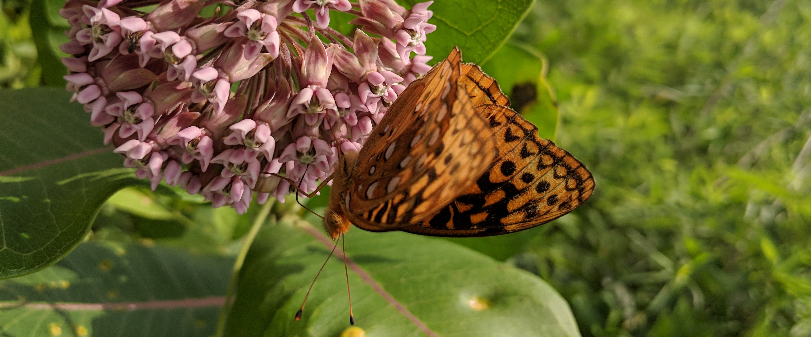

Papers
I have had several opportunities to publish scientific papers both as a lead author and as a member of a larger scientific team. Here are some of the highlights of that record. If any of these links are behind a paywall, simply reach out to me and I’ll work to get you a PDF. The icons to the left of the titles (e.g., ) are intended to help roughly group content by their topic.

Not (Yet!) Published
Note that most of these projects have GitHub repositories but they are set to ‘Private’ until publication. If you would like to use the code in one of these repos, just reach out and we can discuss adding you to the repositories before the papers are published.
– Gaynor, K. et al. Ten Simple Rules to Cultivate Belonging in Collaborative Data Science Research Teams. [In publication]
– Kucuk, R.A., Campbell, B.J., Lyon, N.J., Caterino, M.S. Gut Bacteria of Adult and Larval Cotinis nitida Linnaeus (Coleoptera: Scarabaeidae) Demonstrate Community Differences According to Life Stage and Gut Region. [In prep]
Published
– Coon, J.J., Lyon, N.J., Raynor, E.J., Debinski, D.M., Miller, J.R., Schact, W.H. 2021. Using Adaptive Management to Restore Grasslands Invaded by Tall Fescue (Schedonorus arundinaceus). 76. 2021. Rangeland Ecology and Management - GitHub repo
– Lyon, N.J., Stein, D.S., Debinski, D.M., Miller, J.R., Schact, W.H. 2021. Responses of Flowering Plant and Butterfly Communities to Experimental Herbicide and Seeding Treatments for Native Grassland Restoration. 3. 2021. Ecological Restoration - GitHub repo
– Lyon, N.J., Debinski, D.M., Rogers, H.S., Adams, D.C., and Wilsey, B.J. An Integrated Approach to Restoring Grassland Function to Working Lands. 2019. Master of Science Thesis
– Lyon, N.J., Debinski, D.M., Rangwala, I. Evaluating the Utility of Species Distribution Models in Informing Climate Change-Resilient Grassland Restoration Strategy. 7. 2019 Frontiers in Ecology and Evolution - GitHub repo
– Lyon, N.J. and Hodum, P. 2015. Mytilus Mussels as Bio-indicators of Regional Microplastic Trends. University of Puget Sound Undergraduate Thesis